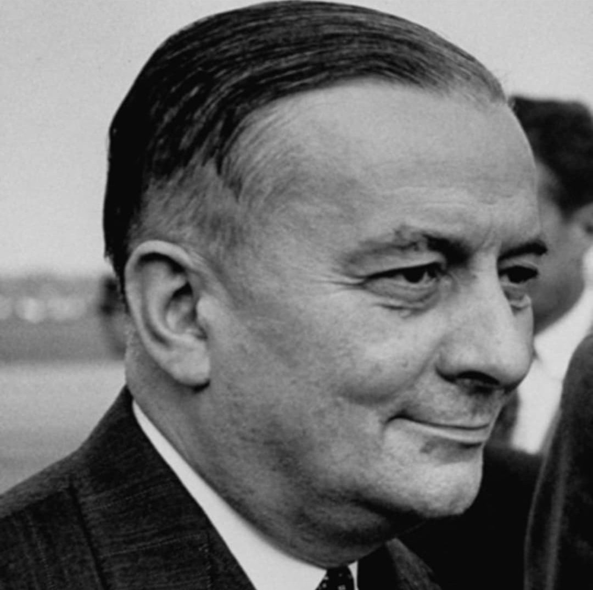

Nom : Georges Bidault
Naissance : 5 octobre 1899
Décès : 27 janvier 1983
Nationalité : Française
Rôle : Résistant, président du Conseil National de la Résistance (CNR)
Georges Bidault est l’une des grandes figures politiques de la Résistance intérieure. Journaliste et professeur, il s’engage dans la clandestinité après 1940 et devient un acteur central de l’unification des mouvements résistants.
Après l’assassinat de Jean Moulin en 1943, Bidault est choisi pour lui succéder à la tête du Conseil National de la Résistance (CNR). Il coordonne les mouvements, partis et syndicats engagés dans la lutte contre l’occupation allemande et le régime de Vichy.
Sous la présidence de Bidault, le CNR adopte un programme qui prépare la France de l’après-guerre : réformes sociales, sécurité sociale, nationalisations, renforcement de la démocratie. Ce programme devient une référence majeure de la Libération.
Après 1945, Georges Bidault occupe plusieurs fonctions politiques importantes : ministre, président du gouvernement provisoire, acteur des débats sur la reconstruction et la place de la France dans le monde. Son nom reste lié à l’unité de la Résistance et au programme du CNR.